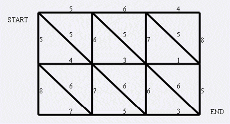

第一行为N,M.表示网格的大小，N,M均小于等于1000.
接下来分三部分
第一部分共N行，每行M-1个数，表示横向道路的权值.
第二部分共N-1行，每行M个数，表示纵向道路的权值.
第三部分共N-1行，每行M-1个数，表示斜向道路的权值.
输入文件保证不超过10M

输出一个整数，表示参与伏击的狼的最小数量.
3 4
5 6 4
4 3 1
7 5 3
5 6 7 8
8 7 6 5
5 5 5
6 6 6
142015.4.16新加数据一组，可能会卡掉从前可以过的程序。